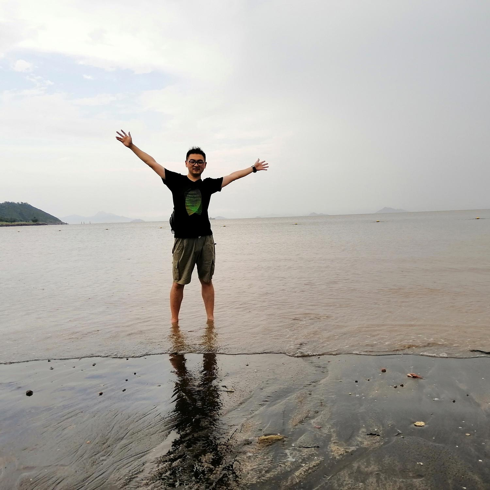
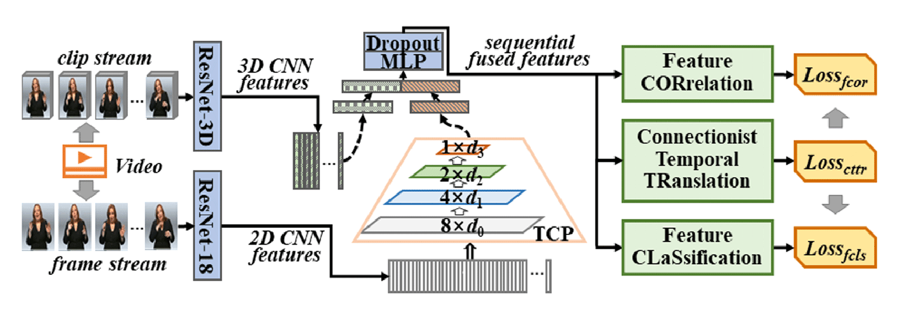

|  |
SHENGENG TANG 唐申庚
Ph.D. Candidate School of Computer Science and Information Engineering (SCSIE) Hefei University of Technology (HFUT) Email: tsg1995[AT]mail.hfut.edu.cn |
I am a Ph.D candidate in Laboratory of Multimedia Computing (LMC). I received the B.E. degree from Hunan Normal University (HUNNU) in 2017. My research interests include image processing and computer vision. Specifically, I focus on Continuous Sign Language Translation (CSLT).
If you are interested in visual understanding and cross-media learning, please visit the homepage of the Visual Understanding Team .
|

|
Connectionist Temporal Modeling of Video and Language: a Joint Model for Translation and Sign Labeling Dan Guo, Shengeng Tang, and Meng Wang International Joint Conference on Artificial Intelligence (IJCAI), 2019 Finished at Hefei University of Technology (HFUT), China [Paper] [BibTex] [Slides] [Poster] |